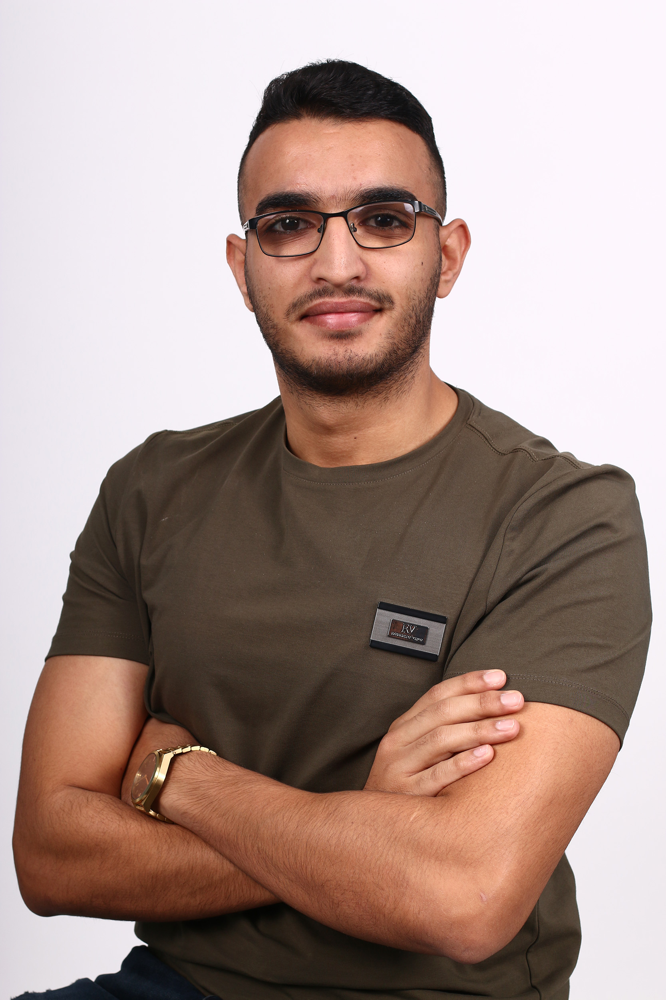

Muhammad Awawdi 
Contact:
-
Email: Muhammad_awawdi@outlook.com
-
Phone-number: 0522885966
- Linked-in: Muhammad Awawdi
Summary:
Computer science graduate with experience as a cyber security consultant at Deloitte.
My unique blend of technical expertise and problem-solving skills make me a strong fit for
a software engineering role. With a deep understanding of programming languages,
algorithms, and data structures, I have a track record of delivering high-quality code that
meets client requirements. Through my consulting experience, I have honed my ability to
work collaboratively with stakeholders, anticipate potential issues, and develop innovative
solutions. I am passionate about leveraging technology to drive positive outcomes.
GPA-82
Education:
2018 - 2023
University of Haifa
B.Sc. in Computer Science.
2014 - 2017
Ebn-Roshd high school, Kafr Kanna
Full Bugrot degree in Physics and Computer Science.
Technical Skills:
Programming Languages:: C, C++, Java, Python, CSS, HTML, JavaScript, Assembly
Environments: Linux, Kali Linux, Visual Studio, Code Blocks, LC3, PyCharm, JavaFX, IntelliJ.
Projects:
Drones-VR project:
Controlling the movement of two drones (drone swarm) that they move simultaneously using a joystick.
Project Characterizations: Wi-Fi connection between the drones and the router, Wi-Fi connection between the
computer and the router
running python code that uses sockets to communicate between the two drones running on the network.
Lilach Flower Shop
Developed a system for a flower shop in a group of 5.
Technologies used: Java, JavaFX, MySQL, TCP, Multi-Threading.
Client-server-based project with several operations for each of the managers/customers, dealing with
orders, management, shop catalog, payments, sales, complaints, and much more.
Work Experience
November 2022 - present
Cyber Security Consultant at Deloitte
As a Cyber Security Consultant at Deloitte Consulting, I gained extensive experience in conducting risk assessments
and developing security protocols for clients across various industries.
I collaborated with clients' IT and security teams to identify potential threats and vulnerabilities and provided
recommendations for remediation.
I also led security awareness training sessions for clients' employees, educating them on best practices for
information security. My role required me to work closely with stakeholders to develop and implement incident
response plans and contribute to the development of new tools and processes to improve the efficiency and
effectiveness of Deloitte's cyber security consulting services.
Social Activities
2018-present
Perach
Tutor for elementary students with excellence certification.
giving children from underprivileged backgrounds personal attention.
2021-2022
Unit of Academic Excellence - University of Haifa
Tutor for first-year students in Computer Science faculty at Unit of Academic Excellence
Certifications
2021-2022
Kav Mashve Association's business club program.
Active participation in the Computer Science club at Haifa University. The program included getting familiar with
various high-tech organizations and preparing for job Interviews. Participating in a tour in the High-Tech Park in
Bar-Lev that included workshops and lectures.
December2022-March2023
AWS Cloud Practitioner
knowledge of core AWS services, demonstrating proficiency in cloud computing concepts. Experienced in creating
and managing virtual machines, configuring storage solutions, and deploying applications on AWS.
Languages:
Arabic (Native) | Hebrew (fluent) | English (fluent).